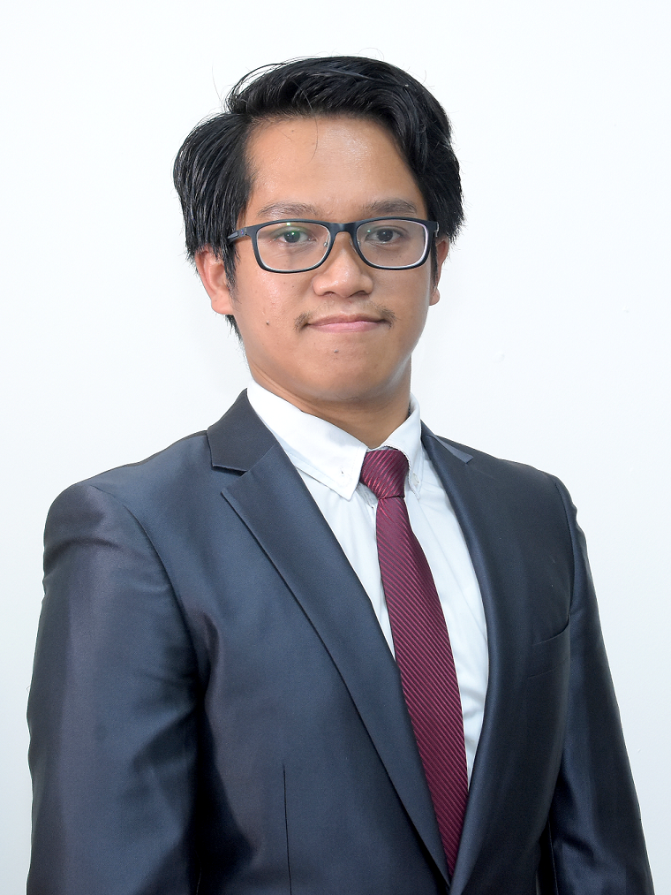

Geometry Processing & Computer Graphics Researcher
I am a faculty member at the Department of Electrical and Information Engineering, Faculty of Engineering, Universitas Gadjah Mada. My research sits at the intersection of geometry data processing, mixed reality, and deep learning for 3D point clouds — with publications in ACM Transactions on Graphics, ACM SIGGRAPH, and Eurographics.

DTETI FT · Universitas Gadjah Mada
I am an Assistant Professor at the Department of Electrical and Information Engineering (DTETI), Faculty of Engineering, Universitas Gadjah Mada (UGM), Indonesia. My research is mainly in the area of geometry data processing and mixed reality (virtual reality and augmented reality).
My works are published in top-tier journals in computer graphics, such as ACM Transactions on Graphics and Eurographics' Computer Graphics Forum; and presented at top-level conferences including ACM SIGGRAPH, Eurographics, and Eurographics' Symposium on Geometry Processing (SGP).
My broader research vision is to develop computational tools that elegantly encode geometric structure — from spectral analysis of curved surfaces to immersive virtual environments — and to apply these tools in education, engineering, and cultural heritage preservation.
Computer Graphics & Visualization Group
Supervisors: Prof. Elmar Eisemann & Assist. Prof. Klaus Hildebrandt
Spectral Analysis for Geometry Processing
Computer Science & Engineering
Supervisor: Prof. Myung-Soo Kim
3D Printing for Deformable Objects
Department of Electrical Engineering
Simulation of Autonomous UAVs
Research interests: Geometry Processing · Virtual Reality (Mixed Reality) · Deep Learning for Point Clouds · Numerical Methods for Engineering · Serious Games
My research spans several cutting-edge areas of computational engineering and applied computer science, with a focus on developing innovative solutions for complex engineering problems.
Developing algorithms for the analysis, manipulation, and optimisation of geometric data — including mesh generation, shape analysis, surface approximation, and spectral methods on manifolds. Core tools include eigenfunctions of the Laplace-Beltrami operator and subspace methods.
Exploring the immersive potential of VR and AR in engineering, education, and cultural heritage. Projects range from architectural visualisation and digital twins to Korean-language learning applications and interactive simulation environments.
Developing novel deep learning algorithms for interpreting and processing 3D point cloud data. Key focus includes anisotropic geometric operators (DeltaConv) applicable in autonomous vehicles, object recognition, and real-time 3D scene understanding.
Computational methods for solving complex differential equations, optimisation problems, and engineering simulations. My work improves precision and efficiency in both academic research and industrial applications.
Designing educational and training games for critical environments. Combining game mechanics with pedagogical goals to enhance engagement, retention, and skill transfer in formal and informal education settings.
I actively release research code alongside publications to support reproducibility and community development. Key repositories include FastSpectrum and LocalFields on GitHub.
Peer-reviewed works published in top-tier venues in computer graphics and geometry processing. Nasikun is highlighted in authorship lists.
ACM Transactions on Graphics (TOG), 41(2), pp. 1–14 · ACM
Computer Graphics Forum, 39(2), pp. 203–217 · Eurographics 2020
Computer Graphics Forum, 37(5), pp. 121–134 · SGP 2018 · Eurographics
Courses taught at the Department of Electrical and Information Engineering, Universitas Gadjah Mada. My teaching bridges theory and practice, aiming to equip students with strong foundations and real-world computational skills.
Foundations of 3D rendering pipelines, polygon mesh processing, lighting models, transformations, and rasterisation. Students implement graphics algorithms from scratch using OpenGL and WebGL.
Graduate-level course covering spectral geometry, differential geometry on discrete surfaces, mesh parameterisation, remeshing, and shape analysis. Heavy emphasis on mathematical rigour.
Introductory programming course covering problem-solving principles, data structures, algorithms, and software design. First programming experience for engineering students.
Design patterns, encapsulation, inheritance, polymorphism and UML modelling. Students build multi-module software systems applying OOP principles throughout.
Process management, memory management, file systems, and concurrency. Labs cover Linux system programming, shell scripting, and OS-level debugging.
Scientific communication, literature review, structured argumentation, and paper writing for engineering and computer science contexts. Guidance on publishing in international venues.
💡 Interested in research collaboration or graduate supervision? Reach out via email — I welcome motivated students in geometry processing, VR, and deep learning.
Funded research projects spanning virtual reality applications, geometry processing tools, and interdisciplinary collaborations.
Research on formulating future ways of working in public sector organisations, exploring how immersive technology and digital tools can reshape collaboration and productivity.
Prototype development for a virtual exhibition platform using immersive VR and AR technology — enabling accessible cultural and artistic experiences.
Study of navigation and interaction patterns in VR environments tailored for learning the Korean Hangeul alphabet, exploring optimal UX design for language education.
Development of an immersive VR application for Korean pronunciation learning, with interactive phonetic exercises and real-time feedback mechanisms.
Development of a VR-based application for introducing and preserving Indonesian national cultural heritage — enabling virtual access to historical sites and artefacts.
Web-based negative content filtering software developed for and in collaboration with Indonesia's Ministry of Communication and Information Technology.
I am open to research collaborations, student supervision, invited talks, and academic partnerships in geometry processing, virtual reality, and deep learning. Prospective graduate students are welcome to reach out.
DTETI FT UGM, Bulaksumur, Yogyakarta 55281, Indonesia
Dept. of Electrical and Information Engineering (DTETI)
Faculty of Engineering · Yogyakarta, Indonesia
Computer Graphics & Visualization Group
Dept. Intelligent Systems · Delft, The Netherlands
Computer Science & Engineering
Seoul, South Korea
If you are interested in pursuing a thesis or research project in geometry processing, VR/AR, or deep learning for 3D data under my supervision, please send your CV and a brief statement of interest to my email address.